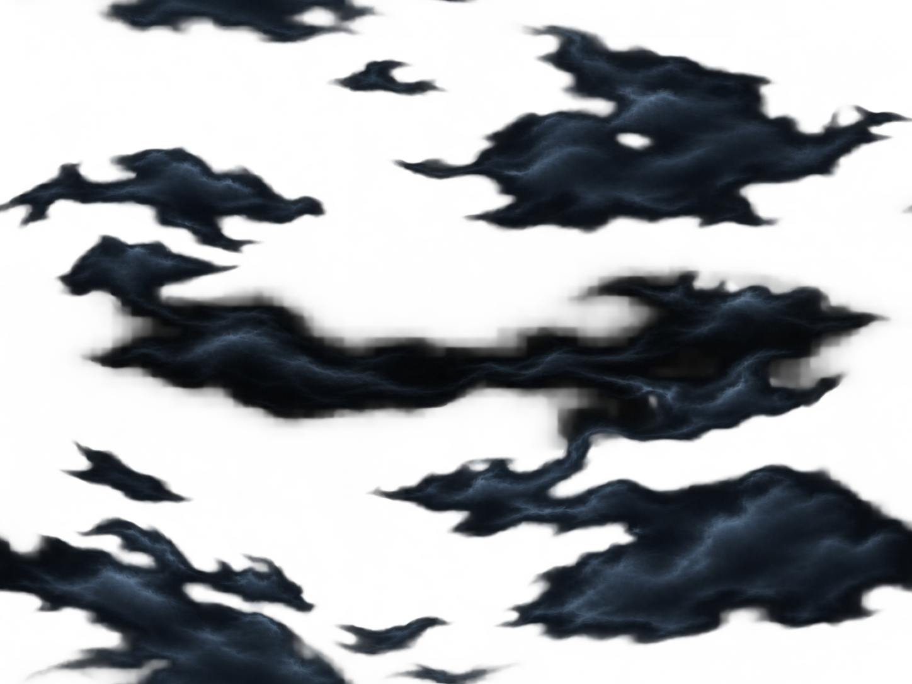

When Salah
Comes Last
The importance of Salah, the consequences of neglecting it, and the path back to Allah.

The importance of Salah, the consequences of neglecting it, and the path back to Allah.